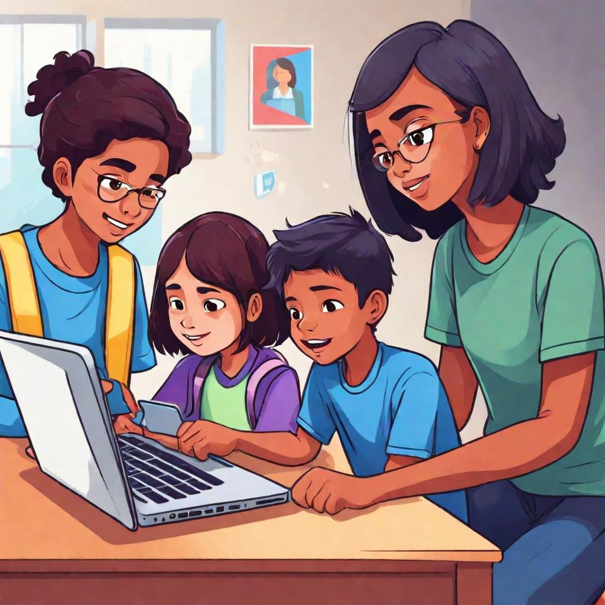

-
For Students
Why Digital Citizenship & Internet Maturity Matters to students Stay Safe Online: Learn how to protect yourself from cyberbullying, scams, and online predators. Be Informed: Understand the impact of your digital footprint and how your online actions can affect your future. Empower Yourself: Gain the skills to make the most of the internet for learning, creativity, and connecting with others.
-

For Parents
Why Parents Should Prioritize Digital Citizenship & Internet Maturity for Your Children Protect Your Children: Equip them with the knowledge to navigate the digital world safely and responsibly. Build Trust: Foster open communication about online experiences and create a supportive environment for discussing internet issues. Future-Proof Their Education: Ensure your children are prepared for the digital demands of the modern world, both academically and professionally.
-
For Teachers
Why Teaching Digital Citizenship & Internet Maturity is Essential Prepare Students for the Future: Help students develop critical thinking and responsible online behavior, skills that are essential for their future careers and personal lives. Enhance Learning: Integrate digital tools effectively in your teaching, making learning more engaging and relevant. Create a Positive Classroom Environment: Teach students to respect themselves and others online, reducing instances of cyberbullying and digital conflict.
-
For Principals
Why Digital Citizenship & Internet Maturity Should Be a School Priority Lead by Example: Position your school as a leader in digital education, fostering a culture of responsibility and respect. Support Your Staff: Provide teachers with the resources and training they need to effectively teach digital citizenship. Engage the Community: Create a collaborative effort among students, parents, and staff to promote a safe and supportive digital environment.
-
For Government
Why Promoting Digital Citizenship & Internet Maturity is Vital for Society National Security: Ensure that citizens are educated on cybersecurity, reducing the risk of cyber threats on a larger scale. Economic Growth: Equip the future workforce with the digital skills needed to thrive in a rapidly evolving job market. Social Responsibility: Foster a culture of responsible internet use, promoting positive online communities and reducing harmful behaviors.